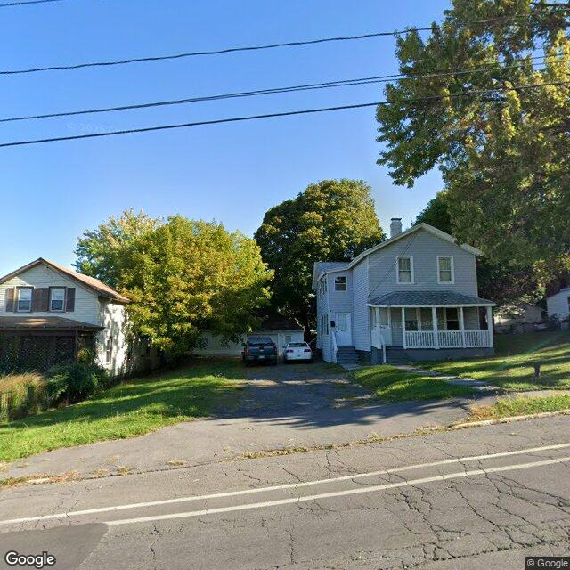
2026-06-27T06:02:56+00:00
3018 Grant Blvd
A street-level view shows two multi-story residential buildings with a shared or adjacent driveway area under a clear sky.
Rental registry: 3 matching records
Open entry
Syracuse Property Atlas
A slow, sourced field notebook for city properties: parcel data, Street View, AI image observations, city open-data matches, tract context, and OpenStreetMap features.
Atlas map
Orange points are published entries. Gray points are parcels still waiting in the queue. Select a point to open the property popup.
Published properties
Each entry is generated by the hourly pipeline. AI notes are treated as field observations, not official code findings.

2026-06-27T06:02:56+00:00
A street-level view shows two multi-story residential buildings with a shared or adjacent driveway area under a clear sky.
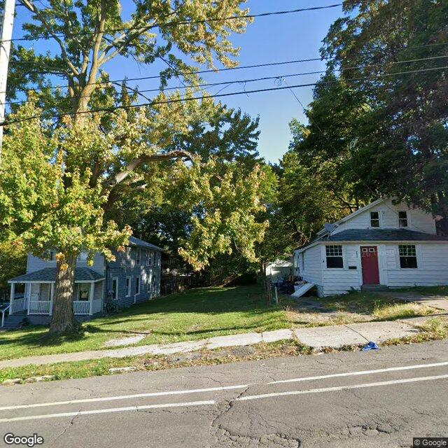
2026-06-27T05:09:12+00:00
The image shows a two-story residential house with siding. The property appears to be in a suburban area, surrounded by trees and lawns.
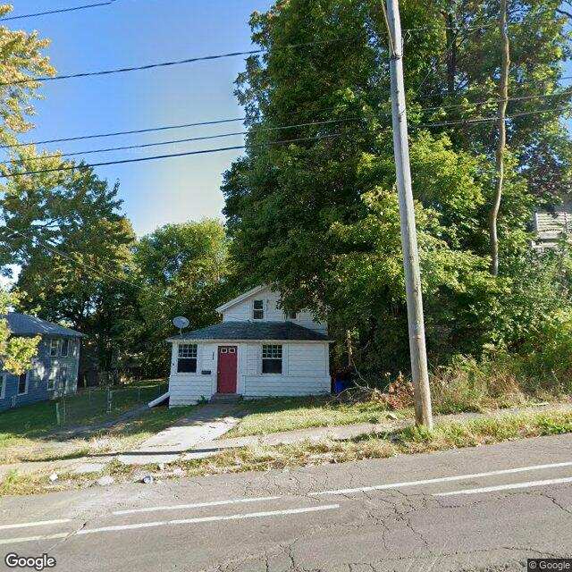
2026-06-27T04:03:53+00:00
A two-story residential structure with white siding and a prominent red front door, partially obscured by dense mature trees.
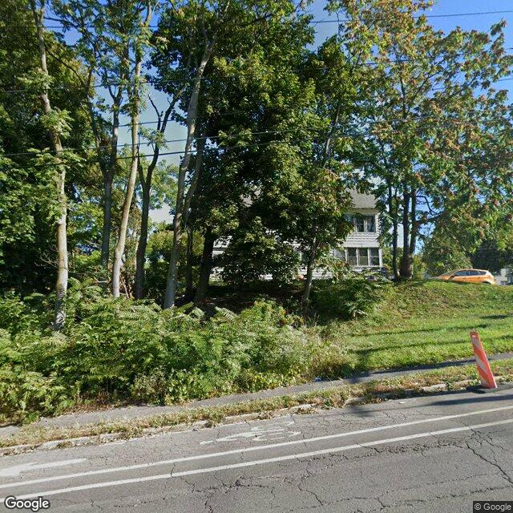
2026-06-27T03:04:00+00:00
A two-story residential structure is partially visible behind a dense screen of mature trees and roadside vegetation.
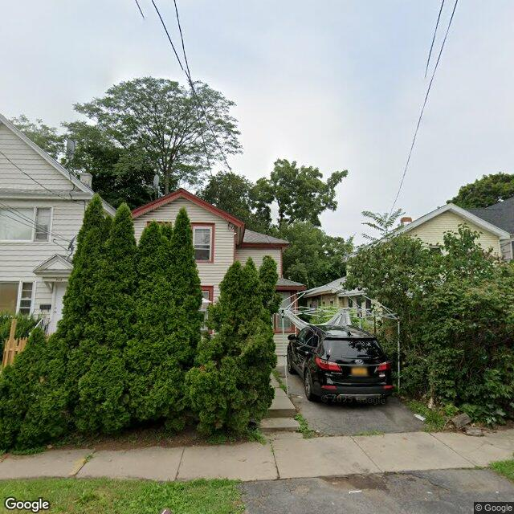
2026-06-27T02:48:32+00:00
The property appears to be a two-story residential structure with light-colored siding and red trim, featuring a front yard with mature shrubs and a paved driveway with a temporary canopy.
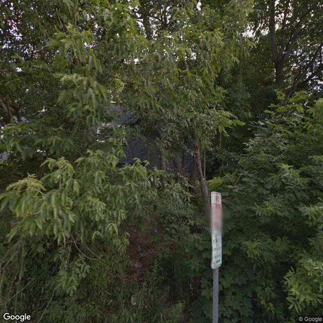
2026-06-27T01:03:03+00:00
The exterior of the property is largely obscured by dense vegetation, making a comprehensive assessment of its conditions difficult from this image.
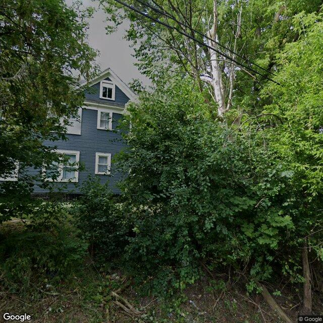
2026-06-27T00:54:56+00:00
A multi-story blue residential building is partially visible behind dense, overgrown trees and foliage that block the lower level.
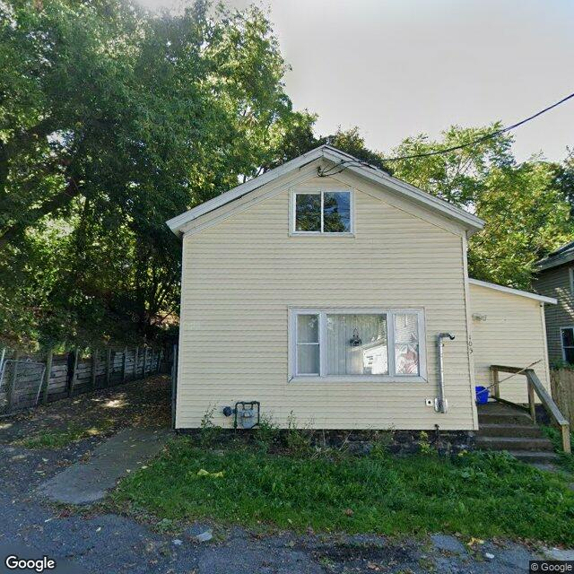
2026-06-26T11:03:06+00:00
A two-story residential building with light-colored siding, featuring a side entrance with wooden steps and a small front yard area.
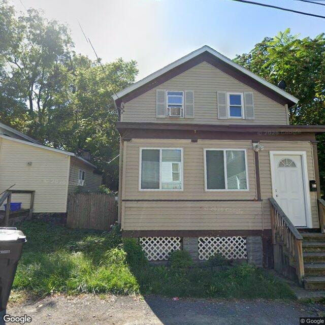
2026-06-26T09:17:12+00:00
The image shows a two-story residential structure with light-colored siding, brown trim, and a front entrance accessed by wooden steps.
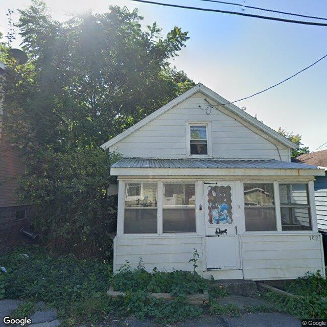
2026-06-26T09:11:22+00:00
A small single-family residential structure with an enclosed front porch, showing weathered siding and overgrown ground vegetation.
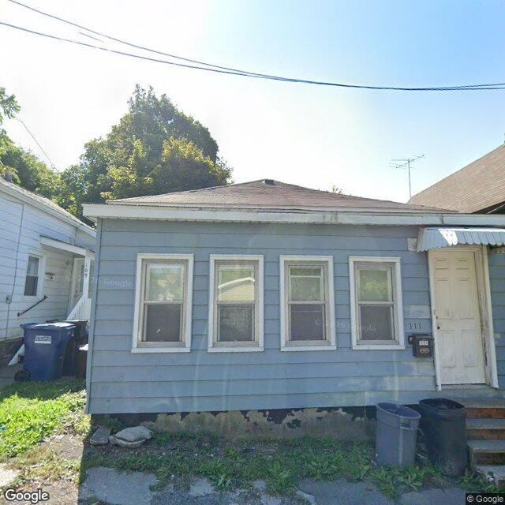
2026-06-26T02:03:05+00:00
The image displays a single-story residential structure with light blue siding, a dark roof, and some visible wear and tear on the exterior.
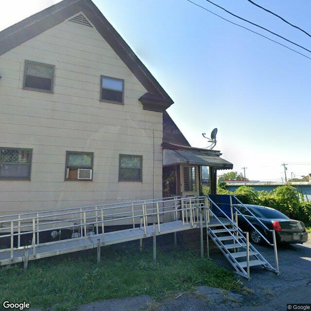
2026-06-26T01:08:15+00:00
The property appears to be a multi-story residential building with light-colored siding, featuring an accessibility ramp leading to a covered entry.
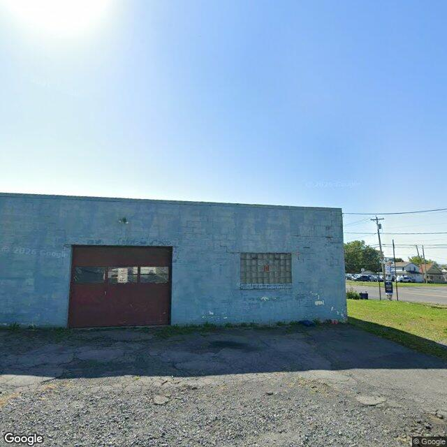
2026-06-25T11:27:33+00:00
The image shows an exterior view of a building with a flat roof and a visible concrete floor. There are no people present in the scene.
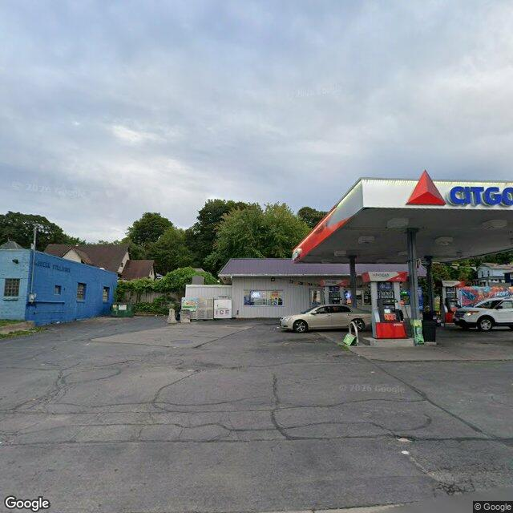
2026-06-22T02:02:55+00:00
The image shows a commercial gas station property with a convenience store, fuel canopy, and a paved parking lot showing visible surface cracking.
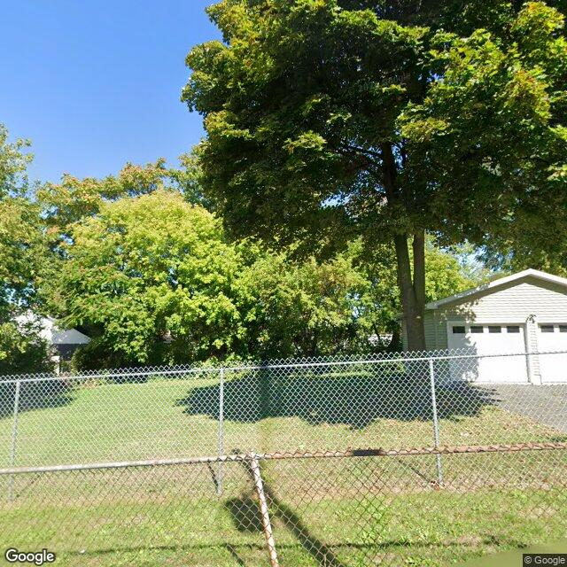
2026-06-22T01:19:12+00:00
The view of the primary structure is heavily obscured by mature trees and foliage, showing only a chain-link fence, a maintained grassy yard, and a detached garage.
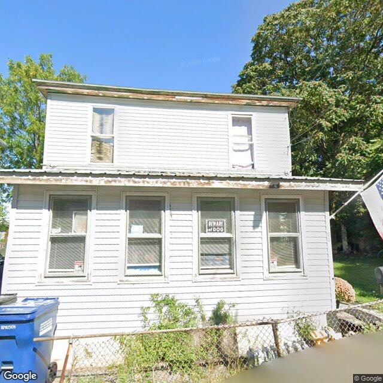
2026-06-19T12:09:09+00:00
The property at 106 PENNSYLVANIA AVE appears to be a two-story residential structure with multiple visible exterior conditions. There are no overt signs of vandalism or neglect that would suggest it is vacant or abandoned.
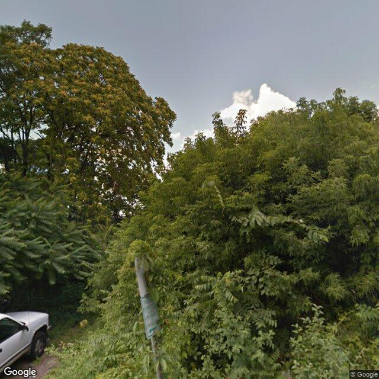
2026-06-19T11:53:38+00:00
The image shows a heavily overgrown lot filled with dense trees and thick green foliage, with no visible building structures.
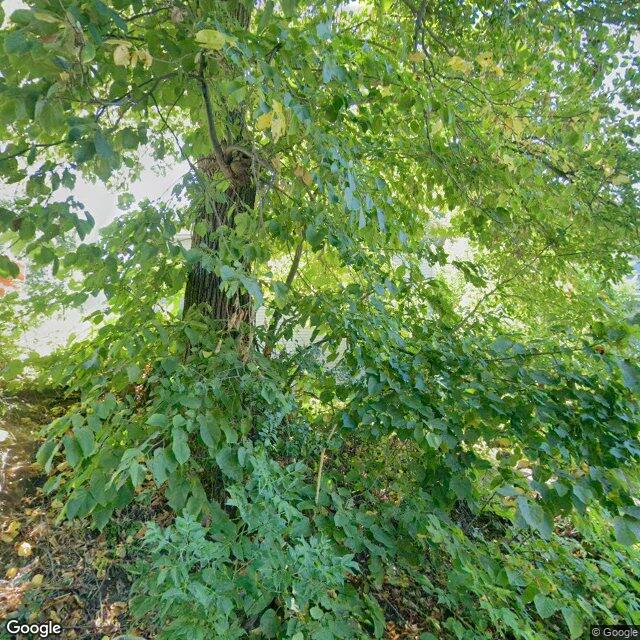
2026-06-18T22:03:03+00:00
The property's exterior is largely obscured by dense foliage and trees, making detailed assessment of structural elements difficult.
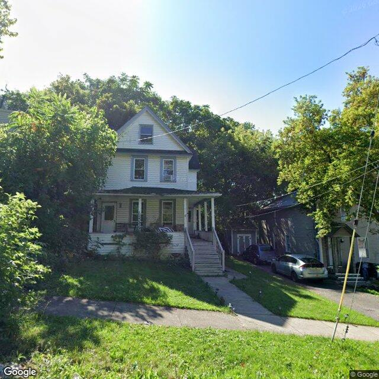
2026-06-18T21:03:07+00:00
A multi-story residence with a front porch is visible, exhibiting some wear on exterior surfaces and moderate vegetation growth around the property.
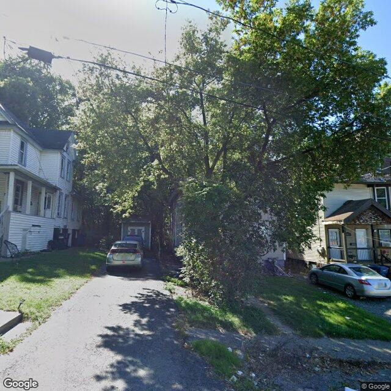
2026-06-18T20:03:04+00:00
The property's primary structure is largely obscured by dense trees and vegetation, making a comprehensive exterior assessment difficult.
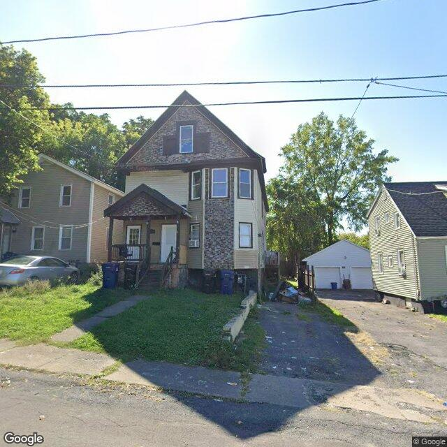
2026-06-18T19:07:04+00:00
{"role": "Cautious Civic Data Assistant Reviewing Public Street-Level Exterior Image for Property", "property": {"address": "107 FOURTH NORTH ST", "parcel_key": "003-10-080", "coordinates": {"lat": 43.077554175418314, "lon": -76.15830173243485}}, "known_public_records": ["Vacant properties: 1 matching record", "Rental registry: 5 matching records"], "task": ["Describe only visible exterior property conditions from the image.", "Compare visible conditions against known_public_records and call out possible image-only issues only when they are plainly visible.", "Use cautious language. Do not infer ownership, occupancy, code violations, criminal activity, socioeconomic status, or protected-class information.", "Do not identify, describe, transcribe, or track people, faces, license plates, or private personal details.", "If the property is blocked, image quality is poor, or the view may show the wrong parcel, lower confidence and explain the caveat.", "When you flag visible issues, include approximate normalized bounding boxes in image_annotations. Use x, y, width, and height as fractions from 0 to 1 relative to the full image.", "Only create bounding boxes for visible property-condition issues, not people, vehicles, license plates, or unrelated background objects.", "Return valid JSON only. Do not wrap it in Markdown"], "schema": {"summary": "One cautious sentence describing the visible exterior", "property_type_guess": "Single-Family|Two-Family|Multifamily|Commercial|Mixed-Use|Vacant Lot|Unclear", "visible_conditions": ["Specific exterior observations visible in the image"], "condition_scores": {"Roof": "Good|Fair|Poor|Not Visible|Unclear", "Siding or Facade": "Good|Fair|Poor|Not Visible|Unclear", "Windows or Doors": "Good|Fair|Poor|Not Visible|Unclear", "Porch or Entry": "Good|Fair|Poor|Not Visible|Unclear", "Yard or Lot": "Good|Fair|Poor|Not Visible|Unclear", "Trash or Debris": "None Visible|Minor|Major|Unclear", "Vegetation or Overgrowth": "None Visible|Minor|Major|Unclear"}, "visible_flags": {"Board Ed Windows or Doors": "Yes|No|Unclear", "Fire Damage Visible": "Yes|No|Unclear", "Structural Damage Visible": "Yes|No|Unclear", "Vacancy Signs Visible": "Yes|No|Unclear", "Active Construction Visible": "Yes|No|Unclear"}, "possible_unrecorded_issues": ["Cautious Image-Only Flags Not Already Reflected in Known Data"], "image_annotations": [{"label": "Short Visible Issue Label", "reason": "Why This Area Was Marked", "bbox": {"x": "Left Position as 0-1 Fraction of Image Width", "y": "Top Position as 0-1 Fraction of Image Height", "width": "Box Width as 0-1 Fraction of Image Width", "height": "Box Height as 0-1 Fraction of Image Height"}, "confidence": "High|Medium|Low"}], "needs_human_review": "True|False", "confidence": "High|Medium|Low", "caveats": ["Limits Such as Image Age, Obstructed View, Angle, or Uncertainty"]}
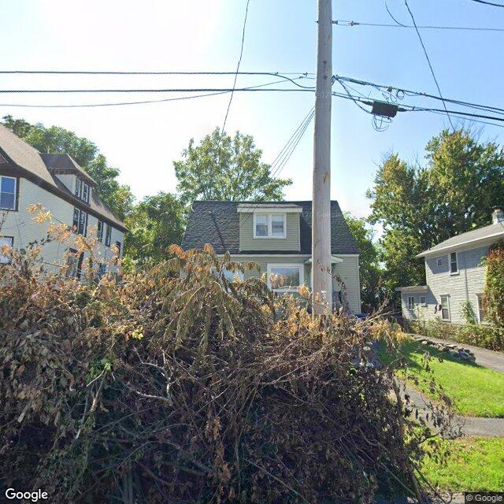
2026-06-18T18:07:02+00:00
{"role":"Cautious civic data assistant reviewing a public street-level exterior image for a property atlas.", "property":{ "address":"109 FOURTH NORTH ST", "parcel_key":"003-10-070", "coordinates":{ "lat":43.07761502433066, "lon":-76.1584534305038 } }, "known_public_records":["Vacant properties: 1 matching record", "Rental registry: 6 matching records"], "task":["Describe only visible exterior property conditions from the image.", "Compare visible conditions against known_public_records and call out possible image-only issues only when they are plainly visible.", "Use cautious language. Do not infer ownership, occupancy, code violations, criminal activity, socioeconomic status, or protected-class information.", "Do not identify, describe, transcribe, or track people, faces, license plates, or private personal details.", "If the property is blocked, image quality is poor, or the view may show the wrong parcel, lower confidence and explain the caveat.", "When you flag visible issues, include approximate normalized bounding boxes in image_annotations. Use x, y, width, and height as fractions from 0 to 1 relative to the full image.", "Only create bounding boxes for visible property-condition issues, not people, vehicles, license plates, or unrelated background objects", "Return valid JSON only. Do not wrap it in Markdown"], "schema":{ "summary":"one cautious sentence describing the visible exterior", "property_type_guess":"single_family|two_family|multifamily|commercial|mixed_use|vacant_lot|unclear", "visible_conditions":["specific exterior observations visible in the image"], "condition_scores":{"roof":"good|fair|poor|not_visible|unclear", "siding_or_facade":"good|fair|poor|not_visible|unclear", "windows_doors":"good|fair|poor|not_visible|unclear", "porch_or_entry":"good|fair|poor|not_visible|unclear", "yard_or_lot":"good|fair|poor|not_visible|unclear", "trash_debris":"none_visible|minor|major|unclear", "vegetation_overgrowth":"none_visible|minor|major|unclear"}, "visible_flags":{"boarded_windows_or_doors":"yes|no|unclear", "fire_damage_visible":"yes|no|unclear", "structural_damage_visible":"yes|no|unclear", "vacancy_signs_visible":"yes|no|unclear", "active_construction_visible":"yes|no|unclear"}, "possible_unrecorded_issues":["cautious image-only flags not already reflected in known_data"], "image_annotations":[{"label":"short visible issue label", "reason":"why this area was marked", "bbox":{"x":"left position as 0-1 fraction of image width", "y":"top position as 0-1 fraction of image height", "width":"box width as 0-1 fraction of image width", "height":"box height as 0-1 fraction of image height"}, "confidence":"high|medium|low"}], "needs_human_review":"true|false", "confidence":"high|medium|low", "caveats":["limits such as image age, obstructed view, angle, or uncertainty"] }
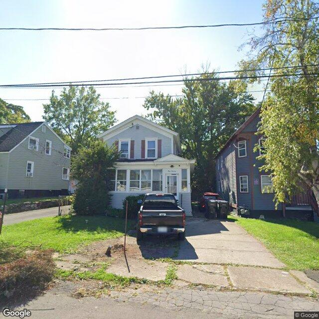
2026-06-18T17:03:10+00:00
A two-story residential building with light-colored siding and an enclosed front porch, featuring a paved driveway with a parked vehicle.
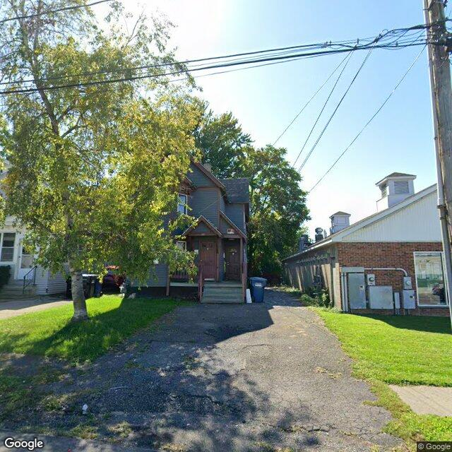
2026-06-18T16:06:39+00:00
The image shows a single-family house with an attached garage. The exterior appears to be in good condition with no visible damage or signs of neglect.
Method
The database starts with Syracuse parcels and enriches each selected property with vacant, rental registry, code violation, and unfit-property feeds. Census geocoding adds tract-level ACS context, OpenStreetMap adds nearby mapped features, and optional image analysis adds a visible-condition read when a free or paid image source is configured.